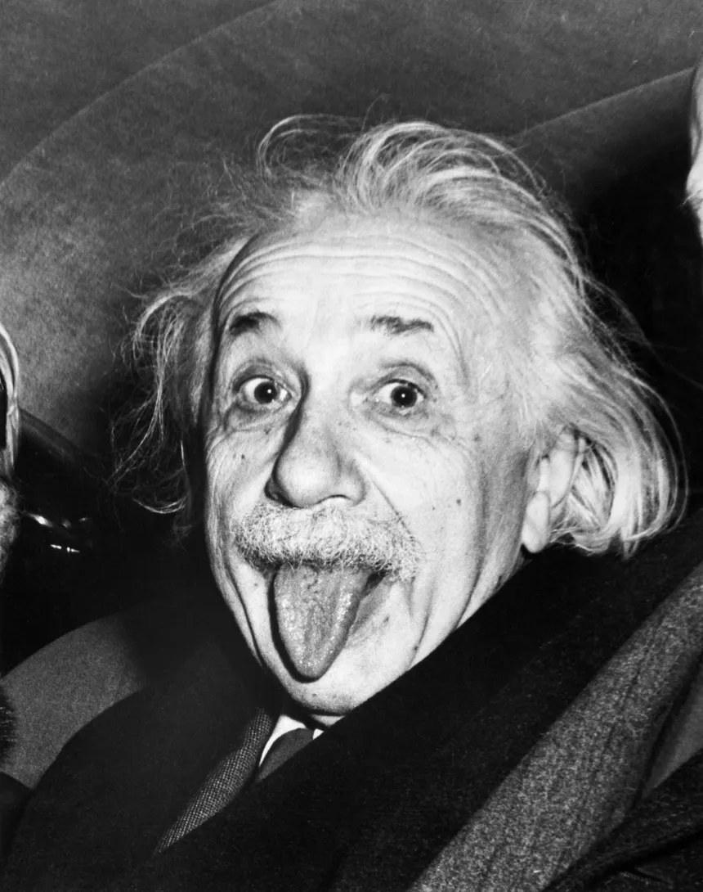

Albert Einstein: El Arquitecto de la Realidad Moderna
Albert Einstein (Ulm, 1879 – Princeton, 1955) es, sin duda, el científico más icónico de la historia. Su imagen es sinónimo de genialidad, pero su verdadera contribución fue derribar las bases de la física clásica para enseñarnos que el universo es mucho más extraño de lo que imaginábamos. No fue un estudiante brillante en el sentido tradicional, pero su capacidad para realizar experimentos mentales cambió el curso de la humanidad.
1905: El Año de los Milagros (Annus Mirabilis)
Mientras trabajaba como un humilde empleado en una oficina de patentes en Berna, Einstein publicó cuatro artículos que revolucionaron la ciencia. En ellos explicó el efecto fotoeléctrico (que le valdría el Premio Nobel), el movimiento browniano y, lo más famoso, la Relatividad Especial. Fue aquí donde nació la ecuación más conocida del mundo: $$E=mc^2$$, revelando que la energía y la materia son dos caras de la misma moneda.
La Curvatura del Espacio-Tiempo
En 1915, Einstein dio un paso más allá con la Relatividad General. Propuso que la gravedad no es una fuerza invisible que tira de los objetos, sino una curvatura en el tejido del espacio-tiempo causada por la masa. Imagina el universo como una malla elástica donde una estrella es una bola pesada que la deforma; esa deformación es lo que hace que los planetas orbiten. Esta teoría permitió predecir la existencia de los Agujeros Negros y las ondas gravitacionales.
A pesar de ser uno de los padres de la mecánica cuántica gracias a su trabajo sobre los fotones, Einstein mantuvo una relación tensa con el mundo de lo microscópico. No le gustaba el azar de la cuántica, lo que le llevó a pronunciar su famosa frase: "Dios no juega a los dados con el universo", iniciando un debate histórico con Niels Bohr sobre la naturaleza de la realidad.
"La distinción entre el pasado, el presente y el futuro es solo una ilusión obstinadamente persistente."
Legado Humanista y Científico
Einstein no solo fue un genio de las matemáticas; fue un firme defensor del pacifismo y el humanismo. Pasó sus últimos años en Princeton buscando una Teoría del Todo que pudiera unificar todas las fuerzas de la naturaleza, un sueño que aún hoy, físicos como los que estudias en esta web, intentan alcanzar. Su legado vive en cada GPS que usamos (que debe corregir el tiempo según sus teorías) y en nuestra ambición por entender las estrellas.
Tendencias
- #RelatividadExtrema: ¿Es el tiempo una ilusión? El debate entre físicos y filósofos sobre la "inexistencia" del flujo temporal.
- #AgujerosDeGusano: Nuevos modelos cuánticos sugieren que podrían conectar el pasado con el futuro y resolver la paradoja de Hawking.
- #ComputaciónCuántica: El salto a la "tolerancia a fallos" y el uso de iones atrapados para simulaciones químicas complejas.
- #MateriaOscura: Detectores de grafeno logran captar interacciones de partículas fantasmales por primera vez en años.
- #MultiversoFísico: La huella fósil en los datos cosmológicos que podría demostrar la existencia de leyes físicas alternativas.
La física de vanguardia este año se centra en unir la gravedad con el colapso cuántico, desafiando nuestra percepción de la realidad cotidiana.